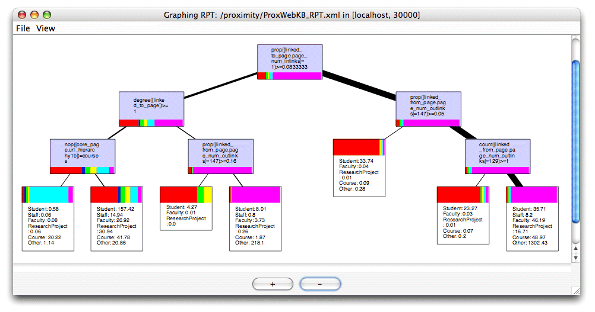
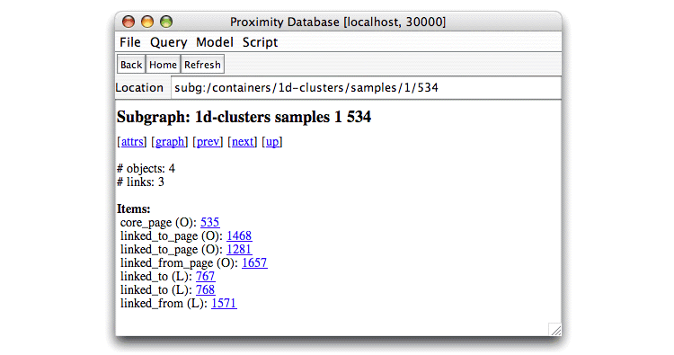
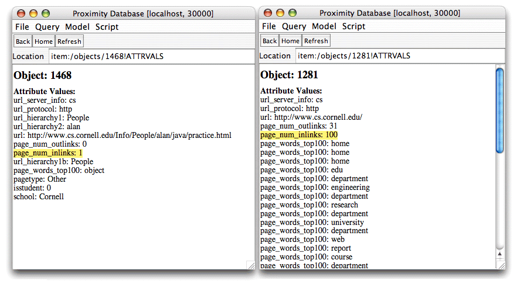
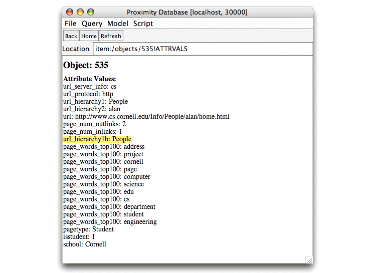
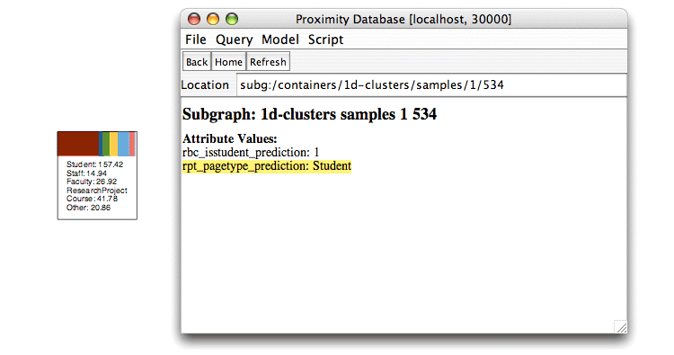

To help you understand and visualize the resulting RPT model, Proximity provides an RPT viewer. This section describes how to display a graphic representation of the RPT and how interpret the labels on the tree’s nodes.
Exercise 7.3. Viewing relational probability trees:
This script requires the RPT created in Exercise 7.2. You must have completed Exercise 7.2 before running the current exercise. Start the Proximity Database Browser if it is not already running.
-
If you have not already done so, copy
rpt2.dtdto the directory containing the saved RPT XML file,ProxWebKB_RPT.xml.>
cp $PROX_HOME/resources/rpt2.dtd $PROX_HOMEProximity requires that the DTD
rpt2.dtdbe in the same directory as the RPT XML file to be displayed, ($PROX_HOMEif you are following the tutorial). -
From the Model menu, choose Graph RPT. Proximity displays the Open dialog.
Navigate to the current working directory (
$PROX_HOMEif you are following the tutorial) and chooseProxWebKB_RPT.xml. Click Open.Proximity opens a window showing a tree view of the RPT learned for this data.
 -
If the graph does not fit the window properly, you can change the magnification level to adjust the display.
-
To make the graph fit the current window, choose Zoom to Fit from the View menu. Proximity adjusts the size of the graph to fit the window. Proximity cannot shrink the graph beyond a certain size, so large graphs may still extend beyond small window borders.
-
To display the graph at the default magnification, choose Center on Root from the View menu.
-
To zoom in, click the + button at the bottom of the graph window.
-
To zoom out, click the - button at the bottom of the graph window.
You can drag the graph to a different position in the window, or use the bottom and side scroll bars to reposition the graph in the window.
-
-
You can optionally save the tree as a JPEG file.
-
In the RPT display window, choose Save as JPEG Image from the File menu. Proximity displays the Save dialog.
-
Navigate to the target directory and enter a name for the JPEG file. Click Save.
-
The following section discusses how to interpret the displayed RPT.
An RPT represents a series of questions to ask about an item to be classified and its relational neighborhood. At each node in the tree, the RPT can ask questions about any of the attributes used to train and test the model. The answers to those question determine the path through the tree. The leaf nodes in the tree tell us the class label predicted by the model. In this example, the target item is a web page, and the model predicts the value for the page’s pagetype attribute.
To see how the model makes predictions, we examine an example web page, object 535, and see how the RPT classifies this object. As we can see from the RPT, to classify this page we need to know the attribute values not just for the target object, but also for the objects that link to and are linked from this object. In the 1d-clusters subgraphs, these related objects are identified as linked_to_page and linked_from_page objects, respectively. The subgraph whose core_page object is 535 is shown below.
|  |
The root node in the RPT starts by examining the value of the page_num_inlinks attribute for the linked_to_page objects in the current subgraph (denoted by linked_to_page.page_num_inlinks in the RPT). If the proportion of all linked_to_page objects having page_num_inlinks = 1 is greater than or equal to 0.083, we traverse the left edge in the RPT.
Subgraph 534 has two linked_to_pages, so we check the value of the page_num_inlinks attribute for these pages.
|  |
Object 1468 has a value of 1 for its page_num_inlinks attribute, and object 1281 has a value of 100 for its page_num_inlinks attribute. The proportion of linked_to_pages with a value of 1 is thus 0.50, which is greater than 0.083. Therefore, subgraph 534 satisfies the first test, and we traverse the left edge in the RPT to the next node in the tree.
The next test looks at how many linked_to_page objects are linked to the core object in the subgraph, represented by degree(linked_to_page) in the tree. Specifically, we test whether the subgraph contains at least one linked_to_page object. Subgraph 534 contains two linked_to_page objects, so we pass this test and again traverse the left edge to the next node in the tree.
The third node examines the value of the
url_hierarchy1b attribute for the
subgraph’s core_page object.
Specifically, the RPT asks whether the value of this attribute is
courses. Because this node examines a
single value for a single object, it does not require an
aggregation function
like proportion or degree. This is indicated by the
nop (no operator) aggregation function as
nop([core_page.url_hierarchy1b])=courses.
|  |
The value of url_hierarchy1b for object 535 is People, so this time we fail the test and traverse the right edge to the leaf node.
Leaf nodes in the RPT tell us the probabilistic counts (out of all objects from the training set that reach this leaf node) for each potential classification of this object. Because some training instances may not have the information necessary to determine which path to take at a split (e.g., it may not have a value for the relevant attribute), the model assigns an appropriate percentage of the instance to each path, resulting in non-integer values at the leaf nodes. We can see that objects that reach this leaf node are much more likely to be student pages than any other page type. Therefore, the model predicts that object 535 has a pagetype of Student, which our script stored in the rpt_pagetype_prediction attribute for the subgraph.
|  |
Examining the attributes of object 535, we see that its pagetype attribute is indeed Student and that the model made the correct prediction for this subgraph.
 |